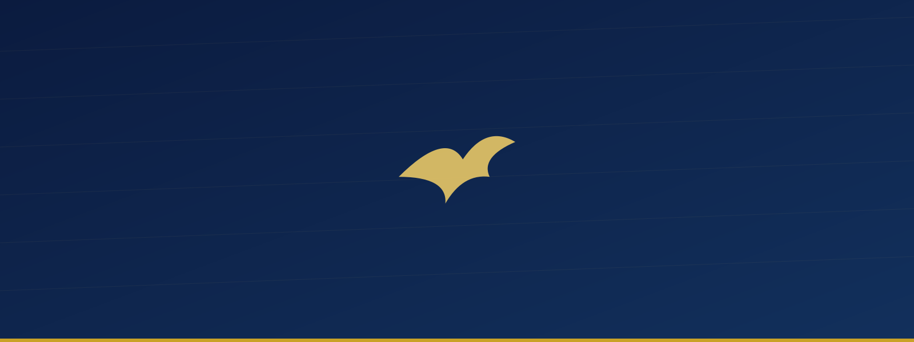

La MIERR, une œuvre de réveil et de restauration
Depuis 2006, la MIERR annonce l'Évangile, forme des croyants et accompagne des vies vers la restauration, au service du Royaume de Dieu.
Deux décennies de réveil
La Mission Internationale Évangélique de Réveil et de Restauration (MIERR) est née en 2006 d'un appel à annoncer l'Évangile, réveiller les cœurs et restaurer les vies brisées. Depuis, l'œuvre s'est déployée à travers plusieurs départements, sections et un institut de formation biblique.
En 2026, la MIERR célèbre vingt années de fidélité : vingt années marquées par la prédication de la Parole, la formation de disciples et de leaders, et l'accompagnement de milliers de vies vers la restauration.
Naissance de l'œuvre : les débuts de la MIERR et la vision de réveil et de restauration.
[Étape marquante à préciser — implantation, ouverture d'un département, extension géographique…]
[Étape marquante à préciser — lancement de l'Institut biblique de formation pastorale de Sion.]
20 ans de la MIERR : deux décennies de réveil et de restauration célébrées avec toute la famille MIERR.
Un réveil qui restaure
Voir des vies transformées par l'Évangile, des croyants affermis dans la foi et des leaders formés pour servir l'Église et la société, dans chaque nation où la MIERR est implantée.
Annoncer, former, restaurer
Annoncer l'Évangile à toute personne, former les croyants à la connaissance de la Parole, susciter le réveil spirituel des communautés, restaurer les vies brisées et former des leaders selon le cœur de Dieu.
Nos valeurs
Foi & Prière
Une vie communautaire enracinée dans la prière, le jeûne et la confiance en la Parole de Dieu.
Parole & Formation
Un enseignement biblique solide, accessible à tous, du nouveau converti au futur pasteur.
Service & Intégrité
Un engagement au service des âmes, dans la transparence, l'excellence et l'intégrité.
Gouvernance & leadership
La MIERR est conduite par une équipe pastorale et un bureau exécutif, appuyés par les responsables de chaque département.
[Nom du responsable]
Représentant légal / Fondateur
[Nom du responsable]
Coordination générale
[Nom du responsable]
Bureau exécutif